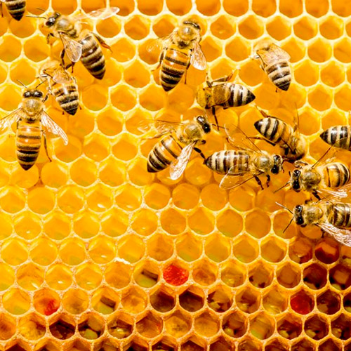

Colonia de abejas salva cultivo en Mendoza
En un evento sin precedentes, un apicultor local descubrió que una colonia de abejas silvestres logró polinizar más del 80% de los viñedos cercanos en tan solo una semana. El hallazgo sorprendió a agricultores y científicos.
“Fue impresionante ver cómo se organizaron”, comentó Elena Ríos, ingeniera agrónoma. Según expertos, este fenómeno podría significar un avance en la lucha contra el descenso poblacional de abejas.
La región ya estudia incorporar colmenas gestionadas como parte de un plan ecológico regional. “El futuro depende de entender y proteger a estos pequeños aliados”, concluyó el apicultor.
Apoyo científico y condiciones ambientales
Investigadores de la Universidad Nacional de Cuyo confirmaron que el impacto de esta polinización acelerada no solo mejoró la cantidad de frutos, sino también su calidad. “La uva presenta mayor dulzor y maduración uniforme”, explicó la doctora Paula Vázquez, especialista en biología vegetal.
Las condiciones climáticas también habrían favorecido la actividad de las abejas. Las temperaturas moderadas y la baja presencia de pesticidas permitieron que se desplazaran con facilidad entre las plantas.
Interés internacional y políticas públicas
El caso generó interés internacional. Organizaciones ambientalistas de Chile, Uruguay y España ya han solicitado informes técnicos para replicar la experiencia en otras regiones vitivinícolas.
Por su parte, el gobierno provincial anunció una línea de subsidios para pequeños productores que adopten prácticas apícolas sostenibles. “La biodiversidad es una aliada directa de la economía rural”, declaró el ministro de agricultura.